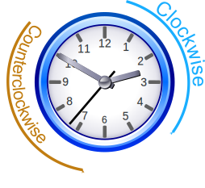
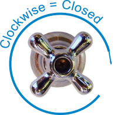

Clockwise and Counterclockwise
Clockwise
Clockwise means moving in the direction of the hands on a clock.

Imagine you walk around something and always keep it on your right.
Try it yourself:
Most screws and bolts are tightened, and faucets/taps are closed, by turning clockwise.

Counterclockwise / Anticlockwise
The opposite direction is called counterclockwise in the US, anticlockwise in the UK, or the less common but pretty cool widdershins!
Angles
Angles from a line are measured counterclockwise (and a negative angle goes clockwise):

BUT compass bearings are measured clockwise:

Compass Bearings
So Which Way?
Clock hands go clockwise, taps are closed clockwise, screws are tightened clockwise, compass bearings go clockwise.
But angles are measured counterclockwise.
(And that is just how it is.)
Abbreviation
Such long words deserve to be shortened.
So clockwise can be shortened to CW.
And counterclockwise to CCW (or maybe ACW for anticlockwise).